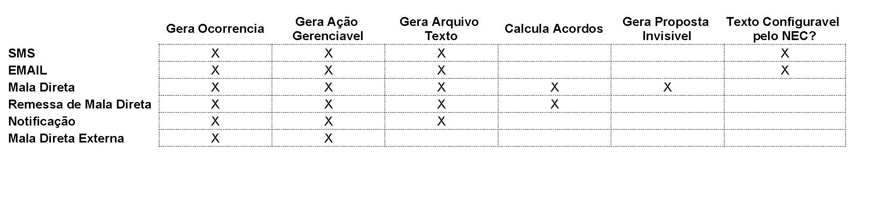

Geração de Mala Direta no Multcob
Guilherme Bencke
Porto Alegre - Dezembro, 2017
Porque fazer as ações no Multcob:
Desde sua criação, o multcob oferece diversas opções em termos de geração de ações massificadas.
Todas as ações geradas dentro do multcob são registradas como ocorrências e os textos e dados gerados para essa ação podem ser consultados dentro do Multcob.
Porque fazer as ações no Multcob(2)
O Multcob ainda permite os seguintes controles de ações (Configurados na hora de gerar a ação):
- Não permitir ações concorrentes
- Não permitir ações concorrentes do mesmo tipo
- Não permitir ligação para o cliente durante a validade da ação.
- Colocar o cliente em Quarentena de n dias
- Controle de Validade da Ação
- Controle do Custo da Ação por unidade.
Tipos de Ações no Multcob
Ações Eletrônicas:
- eMail - Gera o corpo de um email em HTML para ser enviado via fornecedor de email, gerando um arquivo texto a ser enviado.
- SMS - Gera o corpo de um SMS para ser enviado via fornecedor de SMS, gerando um arquivo texto a ser enviado.
Ações por Correio (Snail Mail)
- Mala Direta Externa - Apenas um marcador que indica que foi enviada uma mala Direta para ser confeccionada por um fornecedor externo. Apenas realiza a marcação no Mulcob
- Mala Direta - Apartir de uma configuração bastante detalhada de planos ofertados, politicas a serem usadas e outros parametros, o sistema gera uma serie de acordos "invisiveis" que existem no sistema, mas, que são invisiveis ao operador. É gerado um arquivo final a ser enviado para a grafica.
- Remessa de Mala Direta - Cria Propostas, mas, eles nao sao salvos no sistema, é apenas calculado o acordo e salvo num arquivo txt para ser enviada a grafica.
- Notificacao - Apenas gera um texto de notificacao para ser enviado a grafica.
Quadro de Diferencas entre as ações
Mala Direta Gerada pelo Multcob
Nesse treinamento iremos nos focar em gerar malas diretamente usando o Multcob, e gerando um arquivo a ser enviado para a grafica. Para isso, precisaremos dos seguintes Passos:
- Criar o modelo de ações no Multcob
- Selecionar os contratos que irao participar da mala direta.
- Fornecer os parametros de Calculo dos Acordos
- Calcular os acordos e gerar os acordos invisiveis
- Gerar o Arquivo Texto a ser enviado para a grafica.
Modelo de Acoes de Mala Direta
Para podermos criar acoes no Multcob, é necessario criar um modelo de ação como visto ao lado, que é acessavel pelo menu.

Tela de Modelo de Acoes de Mala Direta

Configurações aplicáveis a todas as Ações

Configurações aplicáveis a todas as Ações
- Nome: O Nome do Modelo de Ação. Esse nome será usado para seleção no Gerenciador
- Tipo de Acao: Selecionar entre: eMail, SMS, Mala Direta Externa, Mala Direta, Remessa, Notificação
- Resultado de ocorrência: O Resultado a ser aplicado nas Ocorrencias a serem gerados por essa ação.
- Permite Ação Concorrente: Permite que quando essa ação estiver em validade, possa ser geradas outras ações?
- Permite Ação Mesmo Tipo: Permite que sejam geradas outras ações desse mesmo tipo quando a ação ainda estiver em validade?
- Permite Ligação: Permite que se ligue para esse cliente quando a ação estiver em vigencia?
- Quarentena (dias): Dias em que o cliente deve ficar sem ligação apartir da geração da ação
- Validade (dias): Dias em que essa ação é valida
- Custo Unitario: Custo unitario por ação gerada.
Configurações aplicáveis a ações de mala

Configurações aplicáveis a ações de mala
- Regras de Politicas: Politicas a serem usadas nessa ação.
- Agrupamento de Promessas: As promessas a serem geradas, será uma por cliente, por contrato ou por politica?
- Ignorar Data de Devolução: Nao levar em conta a data de devolução na hora de selecionar contratos / titulos
- Permitir Seleção Individualizada de Contratos: Permitir que o operador selecione os contratos a serem usados diretamente no gerenciador.
- Permitir Incluir Parcelas com Data até Entrada: Devemos incluir titulos q ainda não venceram?
- Selecao de Endereco: Forma de seleção do endereço a ser enviada a mala.
- Quantidade de Parcelas Oferecidas: Planos Oferecidos nessa mala direta
Gerenciador - Gerar Mala
Para se gerar a mala no Multcob, é bastante simples, apenas selecionar os contratos e os cpfs desejados e clicar em acoes gerenciador

Selecionar modelo de Ação
Ao se selecionar o modelo de ação, é necessário escolher a data de entrada para os acordos a serem gerados, e até quando eles vão ser validados

Opções de Geração de Mala Direta
Abrira uma tela semelhante aos parametros da tela de acordo. Essa tela permite q se configure os descontos e todos os parametros dos acordos a serem gerados.

Seleção de Arquivo e Formato de Mala
Após a seleção do formato de mala direta a ser criado, é necessário que se selecione também o arquivo que será gerado os dados da mala direta
Tela de Ações
Apos a geracao do arquivo de mala direta, podemos acompanhar as acoes na tela de acoes normalmente como abaixo:

Essa mesma tela já é usada para SMS, Email e outras ações.
Efetivação do Acordo de Mala
Quando ocorre a baixa de parcela e se detecta uma baixa de um valor da entrada do acordo de mala direta, esse acordo invisivel identificado pelo valor da entrada ou pelo campo: "NossoNumero", sera efetivado e entrado no sistema como um acordo comum.
Cancelamento do Acordo de Mala
Apos a data de validade do acordo, são cancelados todos os acordos automaticamente de forma invisivel ao operador através do CobSinc noturno